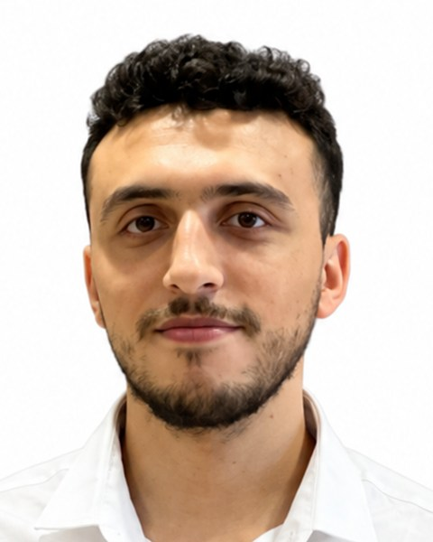

Diplôme d'ingénieur — Cybersécurité et systèmes d'information · EMSI Rabat · diplôme prévu en 2027
2022 – 2027
Élève ingénieur en 5ᵉ année de cybersécurité à l'EMSI Rabat, orienté tests d'intrusion et sécurité web. Pratique de l'évaluation de vulnérabilités, des outils offensifs (Burp Suite, Metasploit, Nmap), de l'automatisation des tests (DAST) et du déploiement DevSecOps. Recherche un stage de fin d'études (PFE) en 2027 en tests d'intrusion, sécurité applicative ou DevSecOps.
Diplôme d'ingénieur — Cybersécurité et systèmes d'information · EMSI Rabat · diplôme prévu en 2027
2022 – 2027Baccalauréat Sciences physiques et chimiques · Lycée Al-Ghazali, Témara
2022Yiwu Sealand Import Export — Stage : automatisation de la détection des vulnérabilités XSS
Juillet – septembre 2026Environnement : Python, FastAPI, Playwright, XSStrike, DalFox, Docker, Jinja2, ReportLab
YZY Digital Technologies — Stage d'été : déploiement cloud et DevSecOps
Juillet – septembre 2025Environnement : Docker, Kubernetes, AWS Fargate, Ansible, Jenkins, SonarQube
Architecture de supervision des systèmes — Projet académique (PFA), 4ᵉ année
2025 – 2026Laboratoire de simulation de phishing — Projet académique, 4ᵉ année · GoPhish, Mailpit, Docker
2025 – 2026Oracle Cloud Infrastructure Certified Foundations Associate — Oracle · certification professionnelle
Septembre 2026Certification vérifiée · délivrée le 9 septembre 2026, valide jusqu'au 9 septembre 2028
Ethical Hacker — Cisco Networking Academy · certificat de cours
Octobre 2026Foundations of Cybersecurity — Google · certificat de cours en ligne (Coursera)
Octobre 2026Administration Linux avec Red Hat RH124 — Honoris · certificat de cours en ligne (Coursera)
Mai 2026Python for Data Science, AI & Development — IBM · certificat de cours en ligne (Coursera)
Novembre 2025The Unix Workbench — Johns Hopkins University · certificat de cours en ligne (Coursera)
Décembre 2024Exercice KASBAH — serious game de crise cyber, EMSI et CyberSup · certificat de participation
23–25 septembre 2026